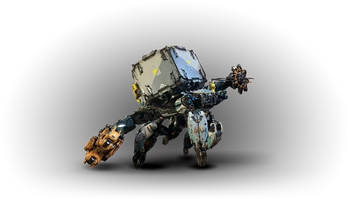
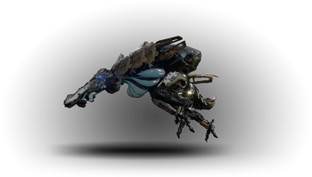
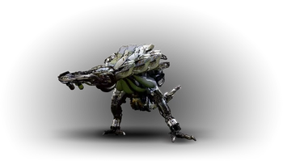
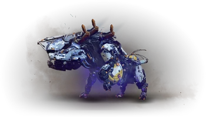

Machine De transport
Le Testudien

Cherche avant tout à protéger sa cargaison à l’aide de son bouclier d’énergie et de ses attaques électriques à distance
Composants :
- Corps : Aucune faiblesse, résistant à l’électricité
- Supports de caisse : Faible face à tout type d’attaque, aucune résistance
- Pistolet à foudre : Faible face à la déchirure, aucune résistance
- Générateur : Faible face à tout type d’attaque, aucune résistance
- Griffe bouclier : Faible face à la déchirure, aucune résistance
Butin :
- Éclat de métal
- Réceptacle métallique
- Bluette
- Fil électrique
- Noyau de machine – moyen
- Tresse lumineuse
- Lentille de Testudien
- Cœur de Testudien
Piratage : RHO
Conseils : Assez originale, cette créature stocke les éléments qu’elle ramasse au niveau de la caisse
dans son dos. Si vous détachez cette caisse en tirant sur ses attaches, elle cherchera à la replacer
dans son dos. Vous pouvez tout d’abord viser et détruire son bras gauche qui lui permet de se protéger
à l’aide d’un bouclier énergétique. Il est à noter que son bouclier ne protège pas son bras droit qui
lui permet de réaliser des attaques de foudre.
Le Cracheur Boursouflé (Gel)

Gonflée de liquide glacial, cette machine peut projeter sa cargaison en jets pour geler ses ennemis
Composants :
- Corps : Faible face au feu, résistant au gel
- Bonbonne à gel : Faible face au gel et à la déchirure, aucune résistance
- Paquetage : Faible à tout type d’attaque, aucune résistance
- Gosier : Faible à tout type d’attaque, aucune résistance
Butin :
- Éclat de métal
- Givrelymphe
- Noyau de machine – moyen
- Tresse lumineuse
- Lentille de Cracheur Boursouflé
- Cœur de Cracheur Boursouflé
Piratage : XI
Conseils : La destruction du gosier empêchera toutes ses attaques de gel quand celle de son paquetage
n’empêchera que ses attaques de gel à distance. La destruction de ces deux éléments provoquera une explosion
à effet de zone. Enfin, évitez de vous tenir devant, et essayez de vous tenir à distance, sur ses flancs.
Le Cracheur Boursouflé (Feu)

Gonflée de liquide explosif, cette machine peut projeter sa cargaison en jets pour embraser ses ennemis
Composants :
- Corps : Faible face au gel, résistant au feu
- Bonbonne à flambée : Faible face au feu et à la déchirure, aucune résistance
- Paquetage : Faible à tout type d’attaque, aucune résistance
- Gosier : Faible à tout type d’attaque, aucune résistance
Butin :
- Éclat de métal
- Flambée
- Noyau de machine – moyen
- Tresse lumineuse
- Lentille de Cracheur Boursouflé
- Cœur de Cracheur Boursouflé
Piratage : XI
Conseils : Assez imposant, le Cracheur fait un adversaire de choix lorsque vous le rencontrerez assez
tôt dans l’aventure. La destruction du gosier empêchera toutes ses attaques de feu quand celle de son
paquetage n’empêchera que ses attaques de feu à distance. La destruction de ces deux éléments provoquera
une explosion à effet de zone. Enfin, évitez de vous tenir devant, et essayez de vous tenir à distance,
sur ses flancs.
Le Mastodonte

Charge sa cible de tout son poids ou utilise son système de levage pour jeter des rochers à distance
Composants :
- Corps : Faible à tout type d’attaque, résistance à l’électricité
- Supports de caisse : Faible à tout type d’attaque, aucune résistance
- Bonbonne à gel : Faible face au gel et à la déchirure, aucune résistance
- Chargeur de force : Faible face à la déchirure, aucune résistance
- Batterie : Faible face à l’électricité et à la déchirure, aucune résistance
Butin :
- Éclat de métal
- Givrelymphe
- Coque d’écho
- Bluette
- Tresse de cristal
- Noyau de machine – gros
- Lentille de Mastodonte
- Cœur de Mastodonte
Piratage : XI
Conseils : Face à la puissance de cette machine, que ce soit au corps à corps ou à distance, vous aurez besoin
de l’immobiliser pour pouvoir la détruire plus facilement. Le lance-cordes vous sera très utile. Les six
chargeurs de force répartis de chaque côté de sa tête sont explosifs et provoqueront beaucoup de dégâts tout
comme les deux bonbonnes au niveau de son train arrière. Si vous voulez récupérer le matériel de la caisse au
niveau de son ventre, tirez sur les supports de caisse de chaque côté du Mastodonte.